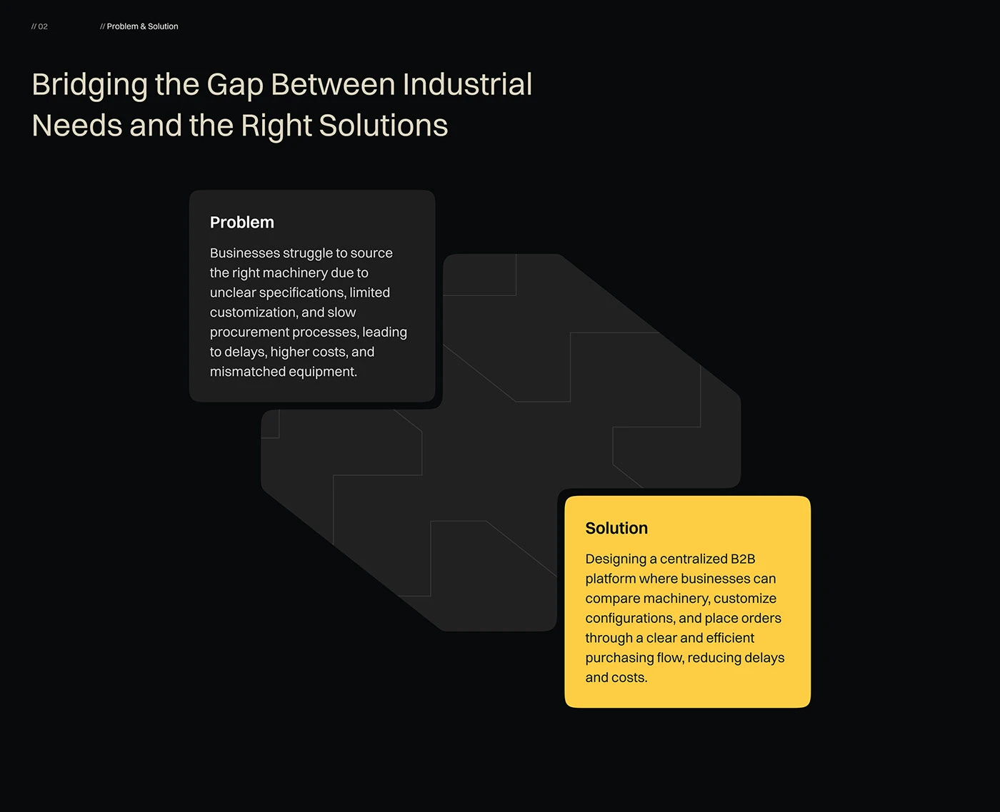
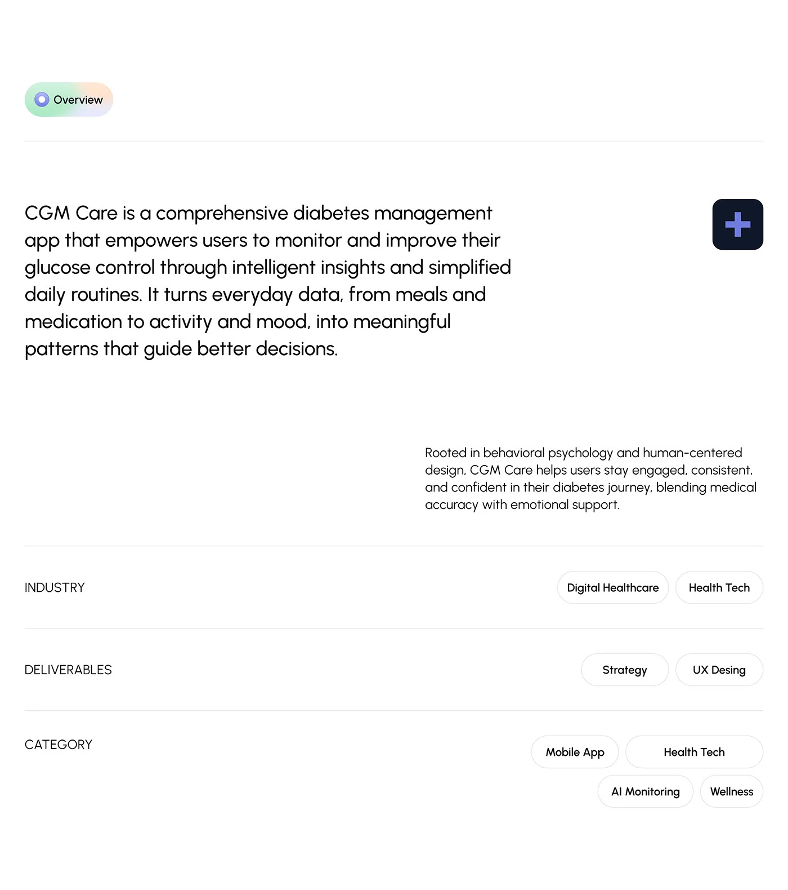
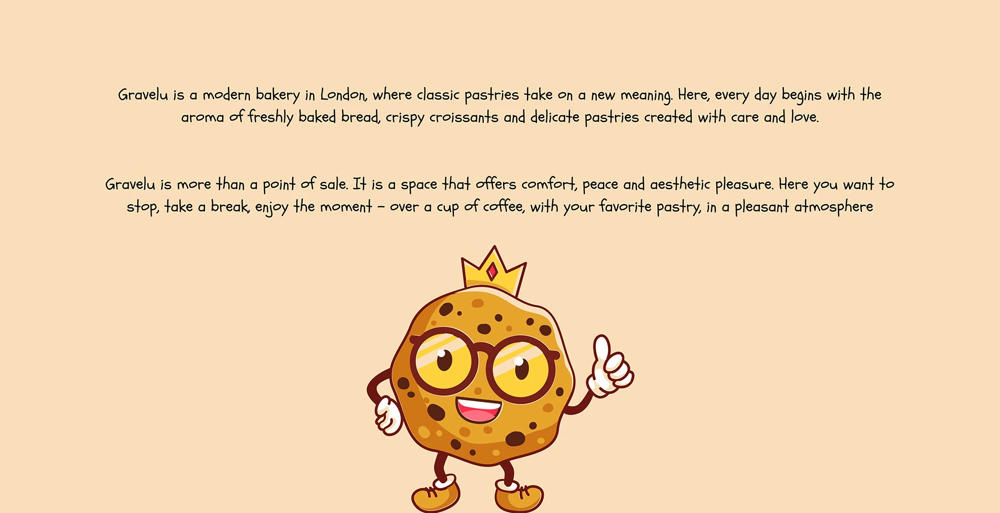

Clueplay.ai
OTT platform revamp · Cinematic, user-centric interface
Product Designer & Frontend Developer
( VALENTINA DESIGN )
I design and build user-centered interfaces, smooth interactions, and practical frontend implementation from concept to production.
Scroll for more
( UI · UX · Web · Figma · Frontend )
( Selected Projects )
OTT platform revamp · Cinematic, user-centric interface

Trading platform UI · Clear data visualization

Health & wellness product site · Clean, approachable look

Brand & product website · Distinct visual identity

Admin dashboard · Patient & doctor operations

Dental clinic website · Patient experience & trust

App UI · Tracks filler words, confident speaking

Event-themed web experience · Energetic campaign
( Services & Expertise )
I focus on user-centered interfaces, clear layouts, and practical frontend implementation. Figma for design; Webflow and WordPress for efficient, accurate builds.
I design responsive web layouts, landing pages, and UI elements that feel intentional from the first tap to the last interaction.
From concept to launch, I build websites that perform and delight. Webflow and WordPress for fast, accurate handoffs.
My toolkit: Figma for design, Adobe XD as an alternative, and HTML, CSS, and Bootstrap for realistic, flexible implementations.
( Employment history )
Olbap Design
March 2024 – December 2025I worked as a Web Designer within a company, responsible for designing and improving corporate websites and service landing pages with a strong focus on UI/UX.
I collaborated closely with product managers and developers to ensure design consistency from concept to implementation. By incorporating user feedback and data-driven insights, I continuously refined designs to enhance usability and conversion rates.
I delivered responsive, brand-aligned web designs optimized for multiple devices and browsers.
Agencia Pópuli
April 2022 – January 2023I worked as a part-time Junior Developer, supporting the development and maintenance of web applications. I assisted in implementing features, fixing bugs, and improving code quality under the guidance of senior developers.
Through hands-on collaboration and real-world tasks, I strengthened my understanding of development workflows and best practices.
( About me )

Web Designer · UI/UX
Valentina Design
My name is Valentina and I'm a web designer who strives for clean, modern, and user-centric website designs.
I primarily use Figma to design responsive web layouts, landing pages, and UI elements. My experience with Webflow and WordPress allows me to create designs efficiently and accurately. Adobe XD is another option for design, and my knowledge of HTML, CSS, and Bootstrap is essential for creating realistic yet flexible designs.
My work highlights: clear layouts and visual hierarchy; mobile-friendly responsive design; streamlined user flows that increase conversion rates.
Get in touchEveryday's Toolbox
Figma, Webflow, WordPress, Adobe XD, HTML, CSS, Bootstrap.
( TESTIMONIALS )
( LET'S WORK TOGETHER )
Looking for help with a product, website, or interface? I'm open to remote freelance and long-term collaborations.